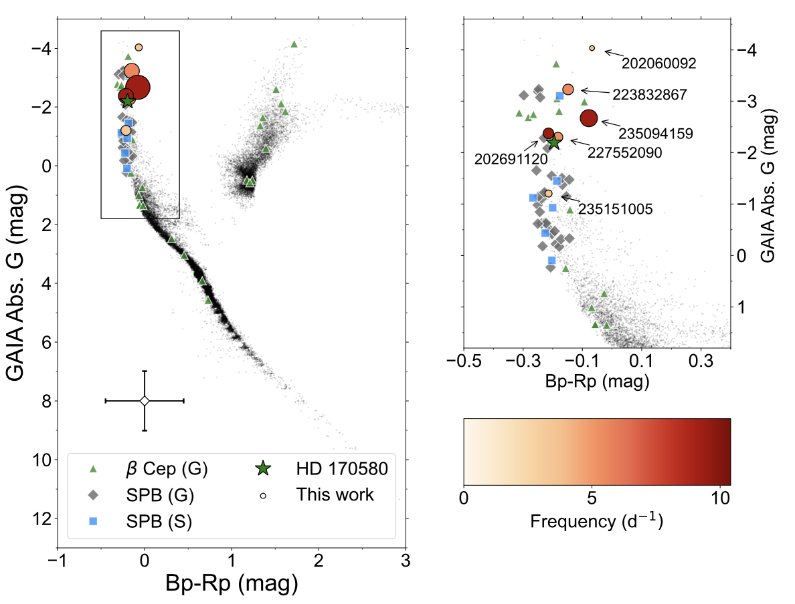
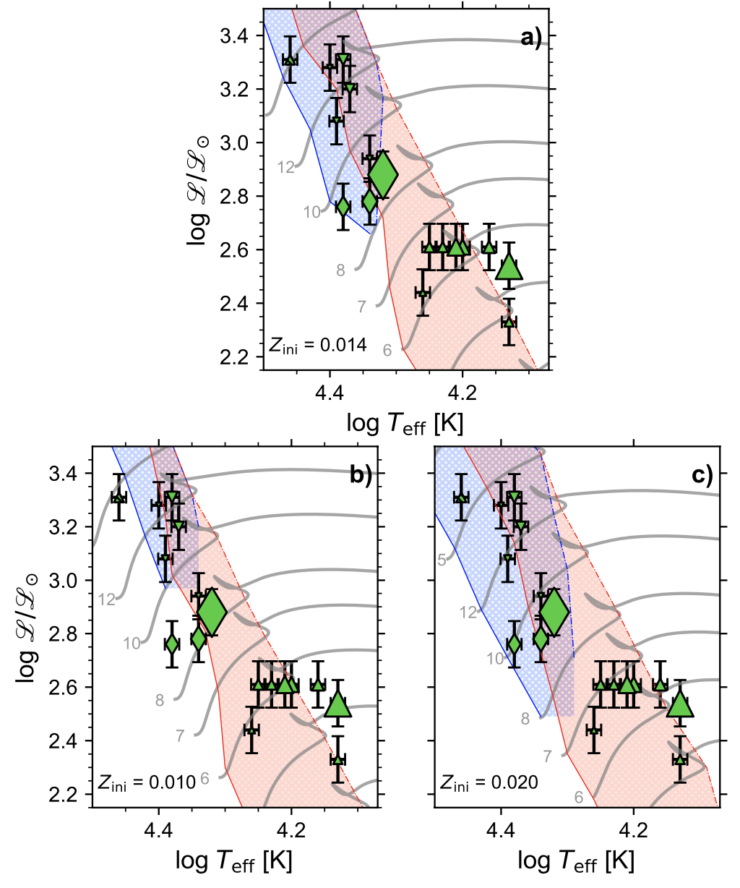
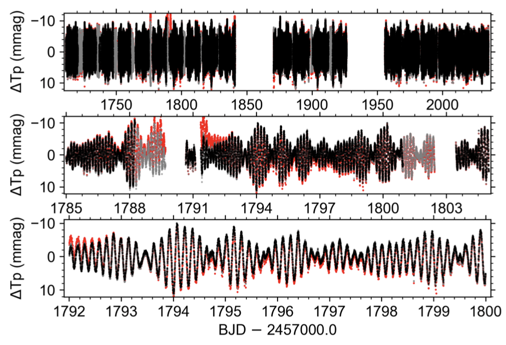

My PhD research was part of an international collaborative research project focusing on the calibration of stellar structure and evolution models, using a technique known as asteroseismology.
These models are important tools to study galactic structure and evolution, since stars are the building blocks of our Galaxy and others.
To deliver these calibrations I used a data-driven approach including data sets from the NASA TESS and K2 space missions, ground-based spectrographs, and the ESA Gaia mission.
Analysis of Kepler/K2 space mission data in a search for variable stars (2018-2019).

Colour-magnitude diagram [1] confirming eight newly discovered high-mass pulsating stars starting from a sample of 130 high-mass stars observed with the Kepler/K2 space mission.
In this project I developed a data extraction and processing pipeline in Python for time series data of hundreds of stars obtained with the Kepler/K2 space telescope.
This was followed by an exploratory analysis of the data sets in order to search for patterns linked to stellar properties. Suitable data sets were subject to an in-depth analysis, in which I combined the findings with results from the ESA Gaia space mission, which provides parallaxes and stellar distances for millions of stars.
Resulted in the publication of a research article in the peer-reviewed scientific journal
Monthly Notices of the Royal Astronomical Society (doi:10.1093/mnras/stz2165) .
First scientific results of the novel TESS space mission telescope (2019-2020).

Hertzsprung-Russel diagrams [2] comparing a selection of variable stars observed with the TESS space mission with theoretical parameter ranges where stars are expected to be variable. Different panels show different input physics. By comparing observed variable stars with theoretical expectations we can improve stellar structure and evolution models.
In this project I set up a Python-based data processing framework to assemble data for 98 stars from different sources, including data sets from the recently launched TESS space mission telescope, and the HERMES spectrograph, mounted on the Mercator telescope on the island of La Palma, Spain.
By comparing certain data features with multiphysics simulations of stellar variability computed on the Flemish Supercomputer Centre, I delivered new evidence-backed insights into the evolution of stars eight times more massive than our Sun.
Resulted in the publication of a research article in the peer-reviewed scientific journal Astronomy and Astrophysics (doi:10.1051/0004-6361/202037700) .
Statistical data modelling of neutron star progenitors (2020-2022).

Diagram showing series data of the brightness of a pulsating high-mass star.
The variations are mainly caused by standing waves that propagate throughout the stellar interior.
Studying these variations therefore allows us to probe the interior physics of stars,
a technique known as 'asteroseismology'.
Here, I developed up a Python-based statistical modelling framework to derive physical properties of neutron star progenitors.
This included assembling different data sets from astronomy database systems, cleaning them for analysis, and extracting data features from the processed data.
I also performed multiphysics simulations of stellar structure and evolution on the Flemish Supercomputer Centre using the codes MESA and GYRE. Finally, the framework
includes statistical inference methods in order to deliver key parameters and their confidence intervals from the comparison between the processed data and the multiphysics simulations.
The results of this project are currently under peer-review.